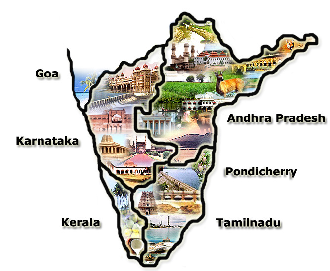

Famous Temples In South India

South India is renowned for its stunning temples, which are architectural
marvels and significant cultural and religious sites. These temples,
primarily associated with Hinduism, are known for their intricate
carvings, towering gopurams (gateway towers), and rich history. Here’s a
closer look at some distinctive features and famous temples across South
India:
-
Dravidian Architecture:
South Indian temples follow the Dravidian architectural style, marked by
pyramid-shaped towers called gopurams. These towers are often adorned
with colorful sculptures depicting gods, goddesses, mythological scenes,
and animal motifs.
-
Gopurams:
The gopurams serve as massive entrance towers, sometimes taller than the
sanctum itself. These elaborate, multi-tiered structures are usually
covered with detailed sculptures and serve as a focal point of temple
design.
-
Mandapams:
Pillared halls or pavilions where devotees gather for prayers and
rituals. The pillars are often adorned with sculptures of deities,
mythological scenes, and animals.
Andhra Pradesh
Karnataka
Tamil Nadu
Kerala